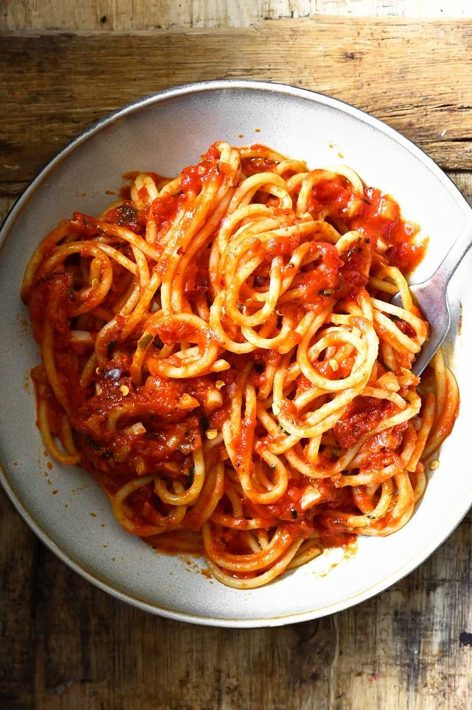

Pasta

Ingredients
- 200 (about 2 cups) pasta (spaghetti or penne)
- 2-3 tbsp olive oil (or regular cookig oil if thats what you have)
- 2 garlic cloves (sliced or minced)
- 1-2 fresh chilies (or 1/2 tbsp chili flakes) -adjust spice toyour taste
- 3-4 medium tomatoes (blended or finely chopped) or 1 can of crushed tomatoes
- Salt (to taste)
- Black pepper (optional)
- Fresh parsely or basil (optional, for garnish)
- Cheese (optioal, parmesan or any cheese you like)
Step's
- Boil Pasta
- Cook pasta in salted boiling water until just soft (check package instraction).
- Save 1/2 cup of pasta water before draining (this helps make the sauce smooth).
- Make Sauce
- Heat oil in a pan.
- Add garlic and chili, cook for about 30 seconds (don't burn the garlic).
- Add tomatoes, a pinch of salt, and let it cook on medium heat for 10-12 minutes until thickened.
- Combine
- Add the drained pasta to the sauce.
- Pour a little pasta water (2-3 tbsp) and mix well until pasta is nicely coated.
- Finish and Serve
- Taste and adjust salt/spice.
- Top with chopped parsely or basil.
- Sprinkle cheese if you like.
Home